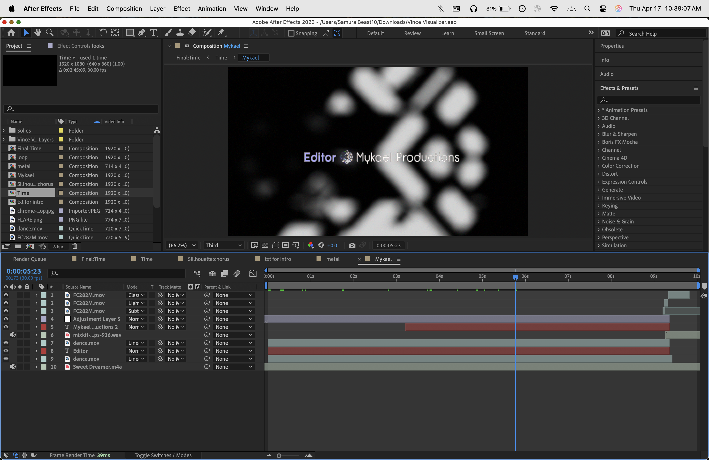
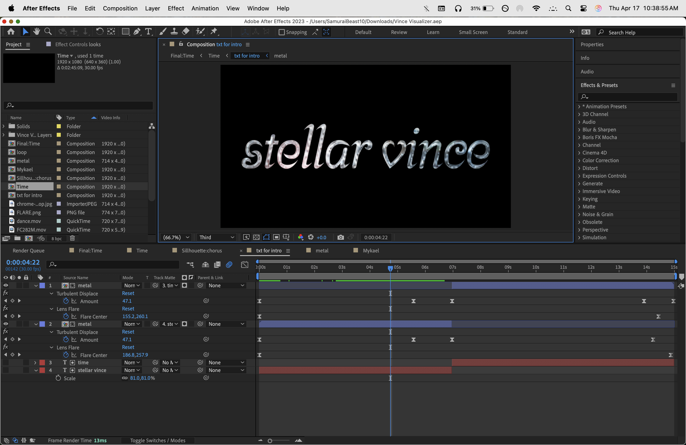
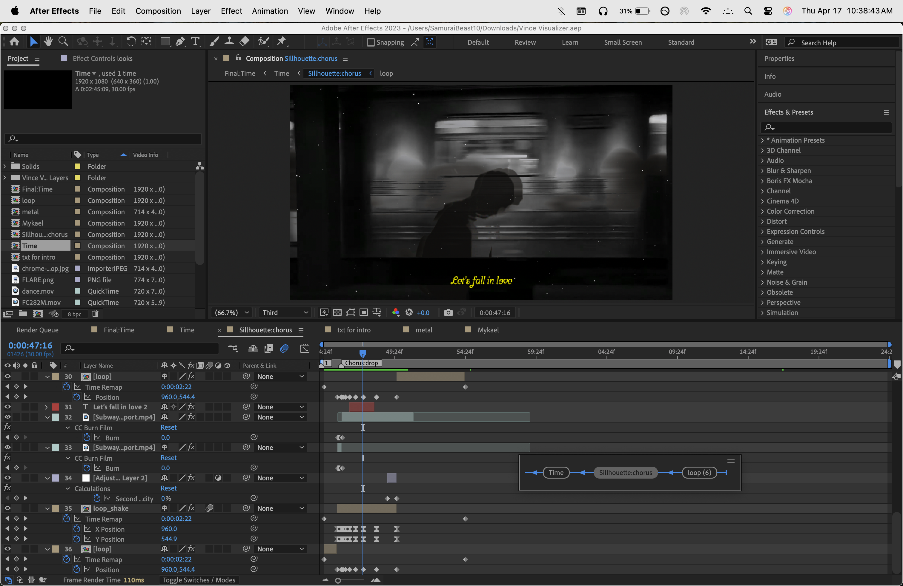
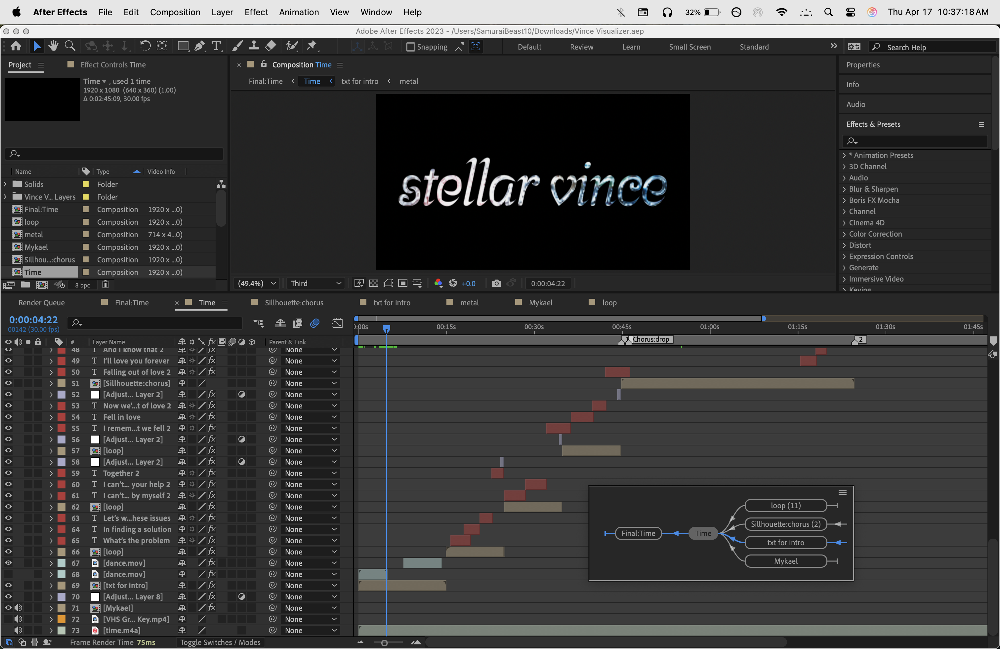
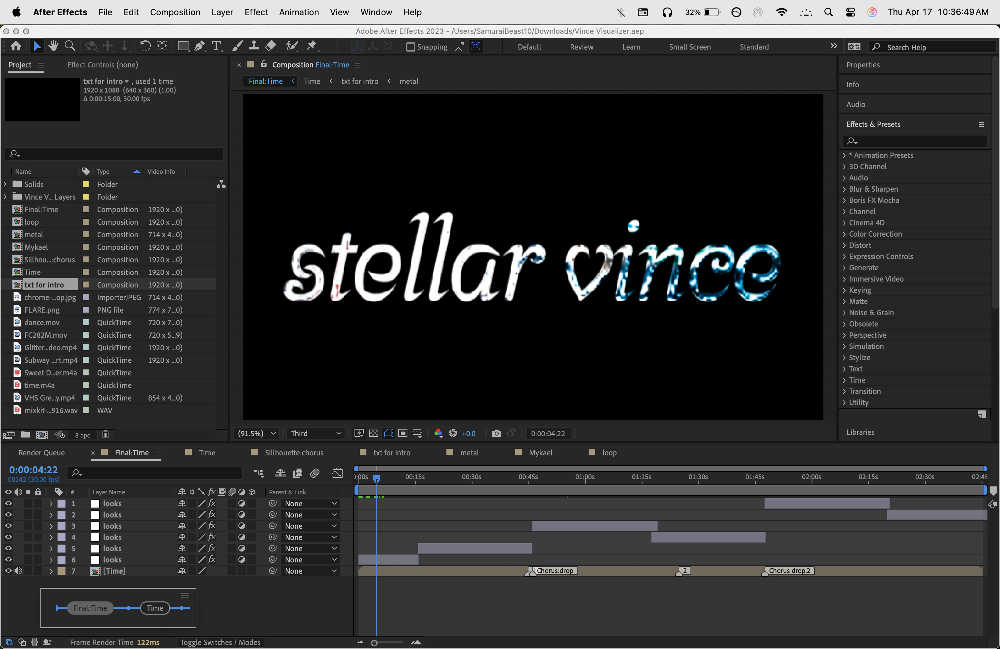

The Stellar Vince - Time Lyric Video (Visualizer) comprises many compositions to show how each works, organization, and how each minimizes extended render time. The idea came about on my end to help his growth of reaching 5k monthly listeners on Spotify and 15k total listeners on his most popular song, Time. He wanted to do a visualizer on the song cover. The rest was free range of creativity.
The loop composition is an altered puppet animation (within After Effects) that separates the actor and background from each other (separated in Photoshop). To loop the video, I used Calculations instead of crossfading because the crossfade would alter the entire scene, which Calculations can do for specific layers with customizations of values and colors.
The Mykael composition is an outro sequence to credit myself as the editor.
The Text intro was mainly used from a tutorial, EasyEdit Tutorials on YouTube. I used a different font, a different chrome texture map for the text, and various settings. I also added my usage of transitions like CC Burn and more effects.
The Sihouette:chorus is a composition made for the song's chorus to add more video editing elements and overlays. The looping train effect was also shown on YouTube. There was a complication to the second chorus because Vince changed the chorus mid-way. I used the Sihouette:chorus comp in the Time composition and blended the improved text and looping layers.
The Time composition is the complete editing timeline of all the additions of my child compositions, including overlays, text layers, more calculation crossfades, effects for each layer, and an alteration to the second chorus.
Lastly, the Final:Time composition is adjustment layers of Lumetri Color for color correcting significant moments.
My most complex challenge in this process was optimally matching the text fades to the song without using too many text layers. Since I was editing on my Mac laptop, I’ve had to figure out ways to keep my render time as low as possible. One of those methods was to have individual text layers for each line, sometimes just one word. Although it took a lot more work, in the end, I could render in less than 35 minutes.